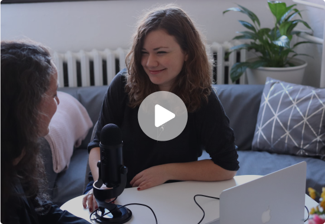

Welkom bij in progress
Hoe gaat het écht met je? In deze podcast nemen twee openhartige gastvrouwen je mee in gesprekken over persoonlijke groei. Elke week schuift een inspirerende expert aan om samen nieuwe inzichten en herkenbare verhalen te delen.
